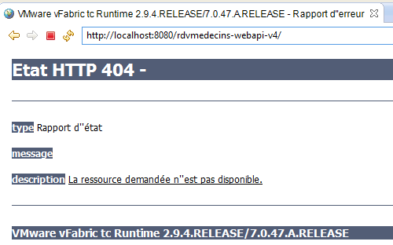
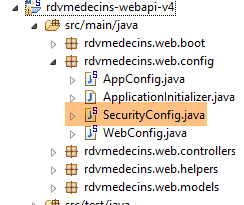
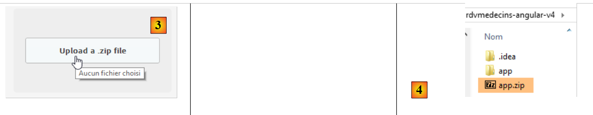

4. Exploitation de l'application
Nous souhaitons maintenant exploiter l'application en-dehors des IDE STS (pour le serveur) et Webstorm (pour le client).
4.1. Déploiement du service web sur un serveur Tomcat
Nous avons vu au paragraphe 2.11.9 comment créer une archive war pour Tomcat. Nous répétons l'opération ici. Tout d'abord, pour préserver l'existant, nous dupliquons le projet Eclipse [rdvmedecins-webapi-v3] dans [rdvmedecins-webapi-v4].
 |
Le fichier [pom.xml] est modifié de la façon suivante :
<modelVersion>4.0.0</modelVersion>
<groupId>istia.st.spring4.mvc</groupId>
<artifactId>rdvmedecins-webapi-v4</artifactId>
<version>0.0.1-SNAPSHOT</version>
<packaging>war</packaging>
<name>rdvmedecins-webapi-v3</name>
<description>Gestion de RV Médecins</description>
<parent>
<groupId>org.springframework.boot</groupId>
<artifactId>spring-boot-starter-parent</artifactId>
<version>1.0.0.RELEASE</version>
</parent>
<dependencies>
<dependency>
<groupId>org.springframework.boot</groupId>
<artifactId>spring-boot-starter-web</artifactId>
</dependency>
<dependency>
<groupId>org.springframework.boot</groupId>
<artifactId>spring-boot-starter-security</artifactId>
</dependency>
<dependency>
<groupId>org.springframework.boot</groupId>
<artifactId>spring-boot-starter-tomcat</artifactId>
<scope>provided</scope>
</dependency>
<dependency>
<groupId>istia.st.spring4.rdvmedecins</groupId>
<artifactId>rdvmedecins-metier-dao-v2</artifactId>
<version>0.0.1-SNAPSHOT</version>
</dependency>
</dependencies>
Les modifications sont à faire à deux endroits :
- ligne 5 : il faut indiquer qu'on va générer une archive war (Web ARchive) ;
- lignes 23-27 : il faut ajouter une dépendance sur l'artifact [spring-boot-starter-tomcat]. Cet artifact amène toutes les classes de Tomcat dans les dépendances du projet ;
- ligne 26 : cet artifact est [provided], ç-à-d que les archives correspondantes ne seront pas placées dans le war généré. En effet, ces archives seront trouvées sur le serveur Tomcat sur lequel s'exécutera l'application ;
Il faut par ailleurs configurer l'application web. En l'absence de fichier [web.xml], cela se fait avec une classe héritant de [SpringBootServletInitializer] :
 |
La classe [ApplicationInitializer] est la suivante :
package rdvmedecins.web.config;
import org.springframework.boot.builder.SpringApplicationBuilder;
import org.springframework.boot.context.web.SpringBootServletInitializer;
public class ApplicationInitializer extends SpringBootServletInitializer {
@Override
protected SpringApplicationBuilder configure(SpringApplicationBuilder application) {
return application.sources(AppConfig.class);
}
}
- ligne 6 : la classe [ApplicationInitializer] étend la classe [SpringBootServletInitializer] ;
- ligne 8 : la méthode [configure] est redéfinie (ligne 7) ;
- ligne 9 : on fournit la classe [AppConfig] qui configure le projet ;
Ceci fait, il peut être nécessaire de mettre à jour le projet Maven (j'ai dû le faire) : [clic droit sur projet / Maven / Update project] ou [Alt-F5].
Pour exécuter le projet, on peut procéder ainsi :
 |
- en [1], on exécute le projet sur l'un des serveurs enregistrés dans l'IDE Eclipse ;
- en [2], on choisit [tc Server Developer] qui est présent par défaut. C'est une variante de Tomcat ;
On obtient le résultat suivant :
 |
C'est normal. Rappelons que le service web n'a pas URL [/] dans ses méthodes. Lorsqu'on essaie l'URL [/getAllMedecins], on a la réponse suivante :
 |
C'est normal. Le service web est protégé.
Maintenant lançons le client [rdvmedecins-angular-v2] dans Webstorm :
 |
En [1], on met l'URL du nouveau service web [http://localhost:8080/rdvmedecins-webapi-v4]. On obtient le résultat suivant :

Pour exécuter l'application en-dehors de l'IDE STS, il existe diverses solutions. En voici une.
Téléchargez une version de Tomcat [http://tomcat.apache.org/download-80.cgi] (juillet 2014) :
 |
On choisit en [1] une version zippée qu'on dézippe en [2]. On revient dans STS :
 |
- dans l'onglet [Servers], on clique droit sur l'application [rdvmedecins-webapi-v4] et on sélectionne l'option [Browse Deployment Location] ;
- en [4] : on copie le dossier [rdvmedecins-webapi-v4] ;
 |
- en [5], on colle le dossier [rdvmedecins-webapi-v4] dans le dossier [webapps] de Tomcat ;
- en [6], on exécute le fichier de commande [startup.bat] (le serveur Tomcat intégré à STS doit lui être arrêté). Une fenêtre DOS s'ouvre pour afficher les logs de Tomcat. Ils doivent montrer que l'application [rdvmedecins-webapi-v4] a été lancée.
Pour le vérifier, on exécute de nouveau le client Angular [rdvmedecins-angular-v2] dans Webstorm :
 |
En [1], on met l'URL du nouveau service web [http://localhost:8080/rdvmedecins-webapi-v4]. On obtient le résultat suivant :
4.2. Déploiement du client Angular sur le serveur Tomcat
Maintenant que le service web a été déployé sur Tomcat, nous allons maintenant déployer le client Angular sur un serveur lui aussi. Ce peut très bien être le serveur qui héberge déjà le service web. Nous prenons cette voie.
Tout d'abord nous dupliquons le client [rdvmedecins-angular-v2] dans [rdvmedecins-angular-v3] et nous faisons les modifications suivantes :
 |
- en [1], tout a été déplacé dans un dossier [app] ;
- en [1], on a supprimé le dossier [bower-components] qui contenait les diverses bibliothèques CSS et JS nécessaires au projet. Tous ces éléments ont été recopiés dans le dossier [lib] [2] ;
- en [1], le fichier [app.html] a été renommé [index.html] ;
Le fichier [index.html] a été modifié pour prendre en compte les changements de chemin des ressources utilisées :
<!DOCTYPE html>
<html ng-app="rdvmedecins">
<head>
<title>RdvMedecins</title>
...
<!-- le CSS -->
...
<link href="lib/bootstrap-theme.min.css" rel="stylesheet"/>
<link href="lib/bootstrap-select.min.css" rel="stylesheet"/>
</head>
<!-- contrôleur [appCtrl], modèle [app] -->
<body ng-controller="appCtrl">
<div class="container">
...
</div>
<!-- Bootstrap core JavaScript ================================================== -->
<script type="text/javascript" src="lib/jquery.min.js"></script>
<script type="text/javascript" src="lib/bootstrap.min.js"></script>
<script type="text/javascript" src="lib/bootstrap-select.min.js"></script>
<script type="text/javascript" src="lib/footable.js"></script>
<!-- angular js -->
<script type="text/javascript" src="lib/angular.min.js"></script>
<script type="text/javascript" src="lib/ui-bootstrap-tpls.min.js"></script>
<script type="text/javascript" src="lib/angular-route.min.js"></script>
<script type="text/javascript" src="lib/angular-translate.min.js"></script>
<script type="text/javascript" src="lib/angular-base64.min.js"></script>
<!-- modules -->
...
<!-- services -->
...
<!-- directives -->
...
<!-- controllers -->
....
</body>
</html>
Par ailleurs, le contrôleur [loginCtrl] a été modifié pour pointer sur le bon serveur afin d'éviter à l'utilisateur de taper son URL :
// credentials
app.serverUrl = "http://localhost:8080/rdvmedecins-webapi-v4";
app.username = "admin";
app.password = "admin";
Ceci fait, exécutons le fichier [index.html] :
 |  |
Puis connectons-nous au service web. Ca doit marcher. Ceci vérifié, arrêtons le serveur Tomcat. Nous allons réutiliser le serveur intégré de STS.
Dans STS, copions tout le contenu du dossier [rdvmedecins-angular-v3/app] dans le dossier [webapp] du projet [rdvmedecins-webapi-v4] (onglet Navigator) [1] :
 |
Ceci fait, lançons [2], le serveur VMware de STS, puis demandons l'URL [http://localhost:8080/rdvmedecins-webapi-v4/app/index.html] :
 |
On a un problème de droits en [3]. Ce n'est pas étonnant car on a protégé le service web. Il faut qu'on déclare que l'accès au fichier [/app/index.html] est libre. Revenons dans Eclipse :
 |
On se rappelle que les droits d'accès ont été déclarés dans la classe [SecurityConfig]. Modifions celle-ci de la façon suivante :
@Override
protected void configure(HttpSecurity http) throws Exception {
// CSRF
http.csrf().disable();
// le mot de passe est transmis par le header Authorization: Basic xxxx
http.httpBasic();
// la méthode HTTP OPTIONS doit être autorisée pour tous
http.authorizeRequests() //
.antMatchers(HttpMethod.OPTIONS, "/", "/**").permitAll();
// le dossier [app] est accessible à tous
http.authorizeRequests() //
.antMatchers(HttpMethod.GET, "/app", "/app/**").permitAll();
// seul le rôle ADMIN peut utiliser l'application
http.authorizeRequests() //
.antMatchers("/", "/**") // toutes les URL
.hasRole("ADMIN");
}
- lignes 11-12 : on autorise tout le monde à lire le dossier [app] et son contenu. On s'inspire, pour le faire, des lignes précédentes.
Maintenant, relançons le serveur Tomcat de STS puis demandons de nouveau l'URL [http://localhost:8080/rdvmedecins-webapi-v4/app/index.html] :

Cette fois-ci, c'est bon.
4.3. Les entêtes CORS
On se souvient peu-être que nous avons bataillé dur pour gérer les entêtes CORS. Dans l'exemple précédent :
- le service web est à l'URL [http://localhost:8080/rdvmedecins-webapi-v4];
- le client HTML est à l'URL [http://localhost:8080/rdvmedecins-webapi-v4/app];
Le client HTML et le service web sont donc sur le même serveur [http://localhost:8080]. Il n'y a alors pas de conflits CORS car ceux-ci n'interviennent que lorsque le client et le serveur ne sont pas dans le même domaine. On devrait pouvoir le vérifier. Nous revenons dans STS :
 |
La génération ou non des entêtes CORS est contrôlée par un booléen défini dans la classe [ApplicationModel] :
// données de configuration
private boolean CORSneeded = true;
Nous passons le booléen ci-dessus à false, nous relançons le service web et nous redemandons l'URL [http://localhost:8080/rdvmedecins-webapi-v4/app/index.html]. On constate que l'application fonctionne.
4.4. Déploiement du client Angular sur une tablette Android
L'outil [Phonegap] [http://phonegap.com/] permet de produire un exécutable pour mobile (Android, IoS, Windows 8, ...) à partir d'une application HTML / JS / CSS. Il y a différentes façons d'arriver à ce but. Nous utilisons le plus simple : un outil présent en ligne sur le site de Phonegap [http://build.phonegap.com/apps].
 |
- avant [1], vous aurez peut-être à créer un compte ;
- en [1], on démarre ;
- en [2], on choisit un plan gratuit n'autorisant qu'une application Phonegap ;
 |
- en [3], on télécharge l'application zippée [4] (le dossier [app] créé paragraphe 4.2 est zippé) ;
 |
- en [5], on donne un nom à l'application ;
- en [6], on la construit. Cette opération peut prendre 1 minute. Patientez jusqu'à ce que les icônes des différentes plate-formes mobiles indiquent que la construction est terminée ;
 |
- seuls les binaires Android [7] et Windows [8] ont été générés ;
- on clique sur [7] pour télécharger le binaire d'Android ;
 |
- en [9] le binaire [apk] téléchargé ;
Lancez un émulateur [GenyMotion] pour une tablette Android (voir paragraphe 6.4) :
 |
Ci-dessus, on lance un émulateur de tablette avec l'API 16 d'Android. Une fois l'émulateur lancé,
- déverrouillez-le en tirant le verrou (s'il est présent) sur le côté puis en le lâchant ;
- avec la souris, tirez le fichier [PGBuildApp-debug.apk] que vous avez téléchargé et déposez-le sur l'émulateur. Il va être alors installé et exécuté ;
 |
Il faut changer l'URL en [1]. Pour cela, dans une fenêtre de commande, tapez la commande [ipconfig] (ligne 1 ci-dessous) qui va afficher les différentes adresses IP de votre machine :
C:\Users\Serge Tahé>ipconfig
Configuration IP de Windows
Carte réseau sans fil Connexion au réseau local* 15 :
Statut du média. . . . . . . . . . . . : Média déconnecté
Suffixe DNS propre à la connexion. . . :
Carte Ethernet Connexion au réseau local :
Suffixe DNS propre à la connexion. . . : ad.univ-angers.fr
Adresse IPv6 de liaison locale. . . . .: fe80::698b:455a:925:6b13%4
Adresse IPv4. . . . . . . . . . . . . .: 172.19.81.34
Masque de sous-réseau. . . . . . . . . : 255.255.0.0
Passerelle par défaut. . . . . . . . . : 172.19.0.254
Carte réseau sans fil Wi-Fi :
Statut du média. . . . . . . . . . . . : Média déconnecté
Suffixe DNS propre à la connexion. . . :
...
Notez soit l'adresse IP Wifi (lignes 6-9), soit l'adresse IP sur le réseau local (lignes 11-17). Puis utilisez cette adresse IP dans l'URL du serveur web :
 |
Ceci fait, connectez-vous au service web :
 |
Testez l'application sur l'émulateur. Elle doit fonctionner. Côté serveur, on peut ou non autoriser les entêtes CORS dans la classe [ApplicationModel] :
// données de configuration
private boolean CORSneeded = false;
Cela n'a pas d'importance pour l'application Android. Celle-ci ne s'exécute pas dans un navigateur. Or l'exigence des entêtes CORS vient du navigateur et non pas du serveur.
4.5. Déploiement du client Angular sur l'émulateur d'un smartphone Android
On répète l'opération précédente avec un émulateur pour smartphone. On veut vérifier comment se comporte notre client sur des petits écrans :
 |
- en [1], on lance un émulateur de smartphone ;
- en [2] et [3], la barre de navigation a été repliée dans un menu ;
 |
- en [4], on se connecte ;
- en [5], la liste et le calendrier sont l'un sous l'autre au lieu d'être l'un à côté de l'autre ;
 |
- en [6], on demande l'agenda ;
- en [7], l'écran étant trop petit, les créneaux ont une partie cachée. C'est la bibliothèque [footable] qui a fait ce travail ;
 |
- en [8], la même vue que précédemment avec cette fois, un rendez-vous.
Au final, notre application s'adapte plutôt bien au smartphone. Cela pourrait être sûrement mieux mais cela reste utilisable.